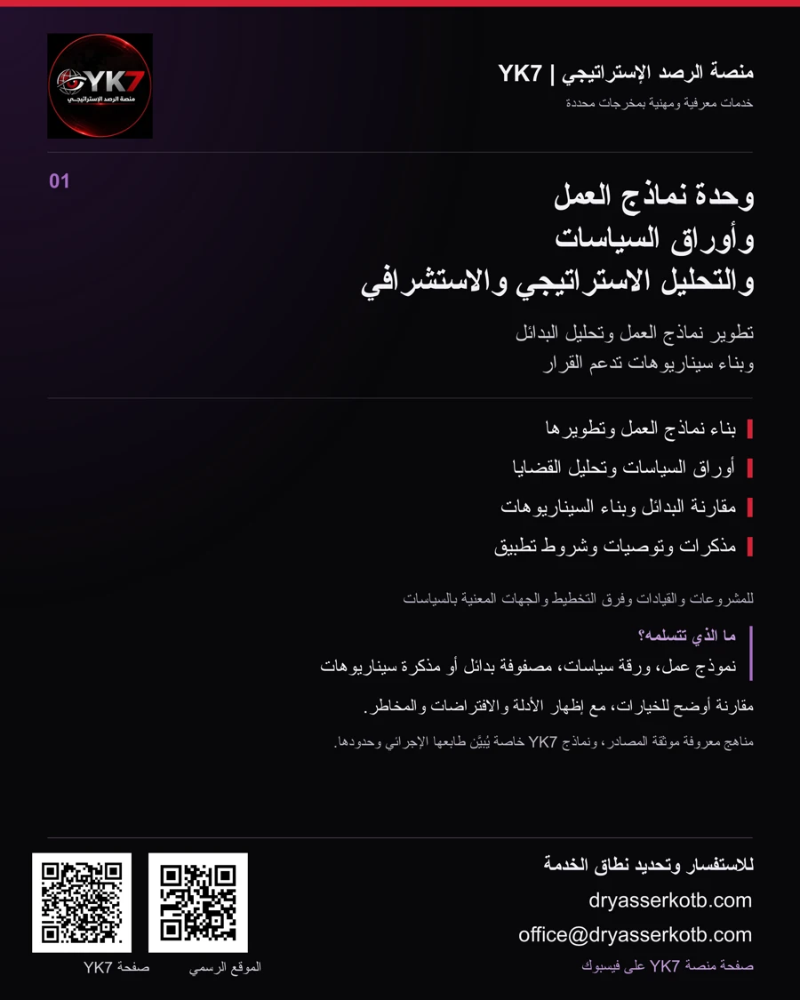
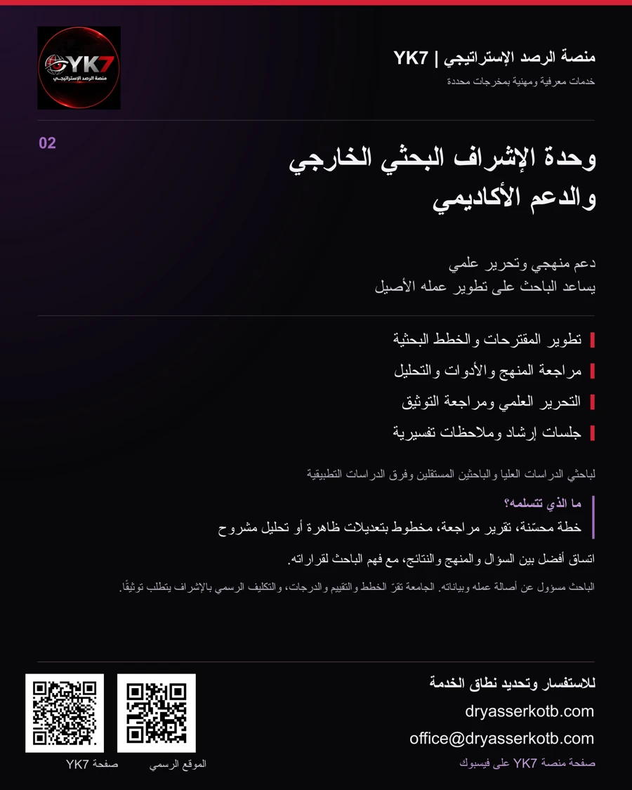
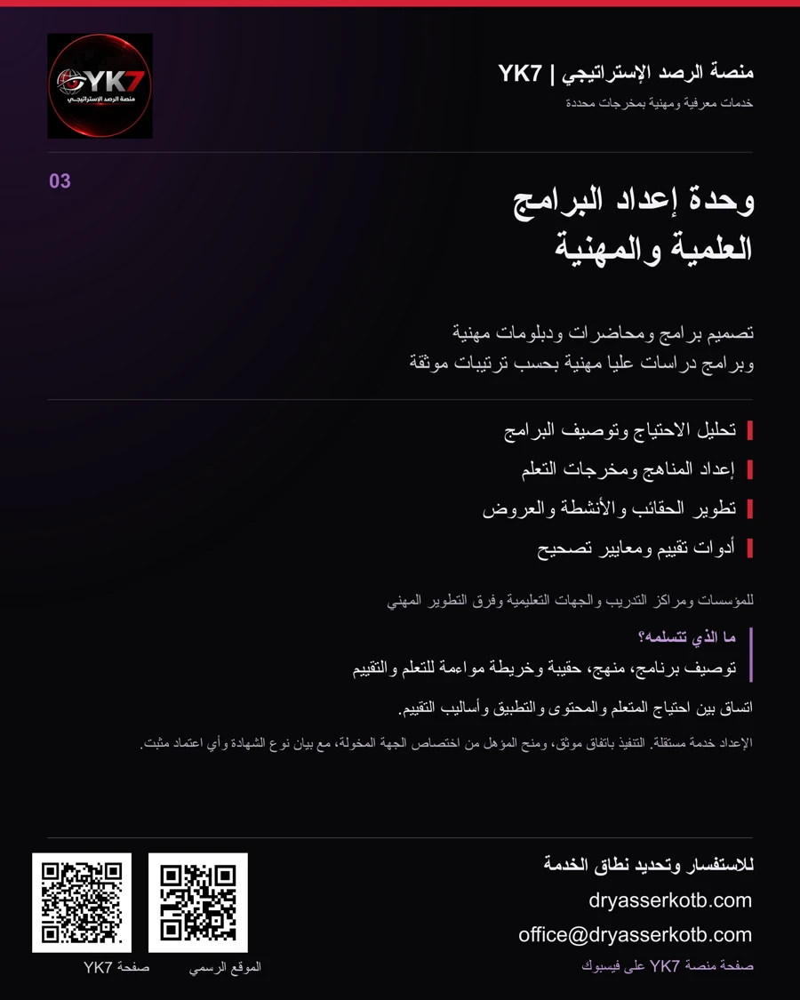

منصة الرصد الإستراتيجي | YK7
وحدات المنصة
وخدماتها
خدمات التحليل والبحث وتصميم البرامج، وفق احتياج محدد ومخرجات وأدوار واضحة.
تعرّف إلى الوحدة المناسبة لاحتياجك، وما تتضمنه الخدمة، وما يمكنك تسلّمه.
وحدة نماذج العمل وأوراق السياسات والتحليل الاستراتيجي والاستشرافي
وحدة تساعد المؤسسات والمشروعات على تطوير نماذج عملها، وفهم القضايا ومقارنة البدائل وبناء سيناريوهات تدعم القرار في ضوء الأدلة والافتراضات المعلنة.
لمن هذه الخدمة؟
رواد الأعمال وأصحاب المشروعات، القيادات وفرق التخطيط، المؤسسات المجتمعية، ومراكز الدراسات والجهات المعنية بالسياسات.
الخدمات وما تتسلمه
- بناء نماذج العمل وتطويرها
- خريطة نموذج عمل، شرائح مستفيدة، عرض قيمة، قنوات وفرضيات إيراد وتكلفة
- إعداد أوراق السياسات
- ورقة سياسات تحدد المشكلة والأدلة والخيارات والتوصية وشروط التطبيق
- تحليل القضايا والبدائل
- مذكرة تحليل، خريطة أطراف ومصفوفة بدائل بمعايير ومبررات واضحة
- الاستشراف وبناء السيناريوهات
- سيناريوهات مشروطة، مؤشرات متابعة ومذكرة آثار على القرار
أمثلة على الاستفادة
مشروع خدمي يدرس التوسع
الاحتياج: مقارنة التوسع المباشر بالشراكة أو التوسع التدريجي.
التطبيق: مراجعة نموذج العمل، وتقدير الموارد والتكاليف والقيود وفق البيانات المتاحة.
المخرج: نماذج بديلة ومصفوفة مقارنة وخطة لاختبار الفرضيات قبل الالتزام.
جهة تدرس تحسين خدمة عامة
الاحتياج: فهم أسباب تأخر تقديم الخدمة واختيار تدخل مناسب.
التطبيق: تحليل الأدلة ومقارنة إعادة تنظيم الإجراءات بالخدمة الرقمية أو التجربة المحدودة.
المخرج: ورقة سياسات وسيناريوهات تطبيق ومؤشرات لقياس الأثر والمتابعة.
أمثلة افتراضية عامة لتوضيح الخدمة، لا تشير إلى عملاء أو مشروعات منفذة ولا تتضمن نتائج مضمونة.


وحدة الإشراف البحثي الخارجي والدعم الأكاديمي
وحدة تقدم دعمًا منهجيًا وتحريريًا للباحثين في تطوير المقترحات والأبحاث ورسائل الدراسات العليا، مع بقاء العمل الأصيل ومسؤوليته لدى الباحث ومرجعيته الأكاديمية لدى جامعته.
لمن هذه الخدمة؟
باحثو الدراسات العليا، الباحثون المستقلون، فرق البحث، والمهنيون الذين يطورون دراسات تطبيقية، وفق لوائح جهاتهم.
الخدمات وما تتسلمه
- تطوير المقترح والخطة
- مقترح أو خطة محسّنة بملاحظات على المشكلة والأسئلة والتصميم والجدول
- مراجعة المنهج والأدوات
- تقرير مراجعة للأداة والعينة وإجراءات جمع البيانات وحدود الصدق والثبات
- مراجعة التحليل وتفسيره
- خطة تحليل، مراجعة ترميز أو معالجة، وجداول أو شروح قابلة للتحقق
- التحرير العلمي والتوثيق
- مخطوط بملاحظات أو تعديلات ظاهرة وسجل للمراجع والتحقق من الإحالات
أمثلة على الاستفادة
باحث يطوّر دراسة عن بيئة العمل
الاحتياج: تحويل موضوع واسع إلى سؤال قابل للدراسة.
التطبيق: مناقشة الفجوة البحثية ومراجعة التصميم والأداة والعينة وخطة التحليل.
المخرج: خطة مشروحة، وتقرير مراجعة للأداة، ومهام ينفذها الباحث ويعرضها على مشرفه.
فريق يراجع دراسة تطبيقية
الاحتياج: تحسين اتساق النتائج والتفسير والتوثيق قبل التقديم.
التطبيق: مراجعة مسار التحليل والإحالات مع الفريق وفق البيانات والموافقات المتاحة.
المخرج: سجل ملاحظات، وجداول مراجعة، ومخطوط بتعديلات ظاهرة وبيان للمساهمات.
أمثلة افتراضية عامة لتوضيح الخدمة، لا تشير إلى عملاء أو مشروعات منفذة ولا تتضمن نتائج مضمونة.


وحدة إعداد البرامج العلمية والمهنية
وحدة تصمم البرامج والمحاضرات والدبلومات المهنية وبرامج الدراسات العليا المهنية، وتعد مناهجها وحقائبها وتقييمها بما يربط احتياج الفئة المستهدفة بمخرجات تعلم قابلة للملاحظة.
لمن هذه الخدمة؟
المؤسسات ومراكز التدريب والجهات التعليمية، فرق التطوير المهني، والخبراء الراغبون في تحويل خبراتهم إلى برامج منظمة.
الخدمات وما تتسلمه
- تحليل الاحتياج وتحديد النطاق
- تقرير احتياج وتوصيف للفئة والمتطلبات والأهداف ونمط التعلم
- تصميم المنهج والبرنامج
- وثيقة برنامج، ومخرجات تعلم، وخريطة وحدات وتسلسل وزمن مقترح
- إعداد المحتوى والحقائب
- دليل مدرب ومتعلم، وعروض، وأنشطة ومصادر وحالات تطبيقية
- بناء التقييم وضبط الاتساق
- خريطة مواءمة، وأدوات تقييم، ومعايير تصحيح وخطة مراجعة وتحسين
أمثلة على الاستفادة
مؤسسة تطوّر برنامجًا لقادة الفرق
الاحتياج: تنمية مهارات اتخاذ القرار والتواصل في مواقف العمل.
التطبيق: تحليل الاحتياج وصياغة مخرجات تعلم وتصميم أنشطة ومحاكاة وتقييم.
المخرج: توصيف برنامج وحقيبة ودليل تنفيذ ومعايير تقييم. تحدد الجهة المنظمة ترتيبات التنفيذ والشهادة.
جهة تعليمية تراجع دبلومًا مهنيًا
الاحتياج: مراجعة المنهج ومواءمة وحداته مع المستوى والمتطلبات المقصودة.
التطبيق: مراجعة المخرجات والمحتوى والتقييم وإعداد وثائق للعرض على لجان الجهة.
المخرج: ملف تصميم وخريطة مواءمة وتقرير مراجعة. تعتمد الجهة المختصة البرنامج وتحدد الجهة المانحة.
أمثلة افتراضية عامة لتوضيح الخدمة، لا تشير إلى عملاء أو مشروعات منفذة ولا تتضمن نتائج مضمونة.


كيف تبدأ الاستفادة؟
- تحديد الاحتياجترسل ملخصًا للمشكلة أو المشروع أو البرنامج والفئة المستهدفة والموعد المقترح.
- تحديد النطاقنتفق على ما تتضمنه الخدمة، والبيانات المطلوبة، والمخرجات والأدوار ومواعيد المراجعة.
- الإعداد والمراجعةنطور العمل على مراحل مع توثيق المصادر والافتراضات والملاحظات والتعديلات.
- التسليم والمتابعةتتسلم الملفات وفق الصيغ المتفق عليها، مع توضيح حدود استخدامها وما يلزم من متابعة.
للاستفسار وتحديد نطاق الخدمة
اذكر اسم الوحدة، وملخص احتياجك، والمخرج المطلوب، والموعد المقترح.
office@dryasserkotb.comيُحدَّد نطاق كل تكليف ومخرجاته وأدوار الأطراف وشروطه في اتفاق مكتوب. وترد أسماء الفريق والشركاء والجهات المانحة والاعتمادات بحسب الوثائق التي تثبت دورها ونطاقها وسريانها.